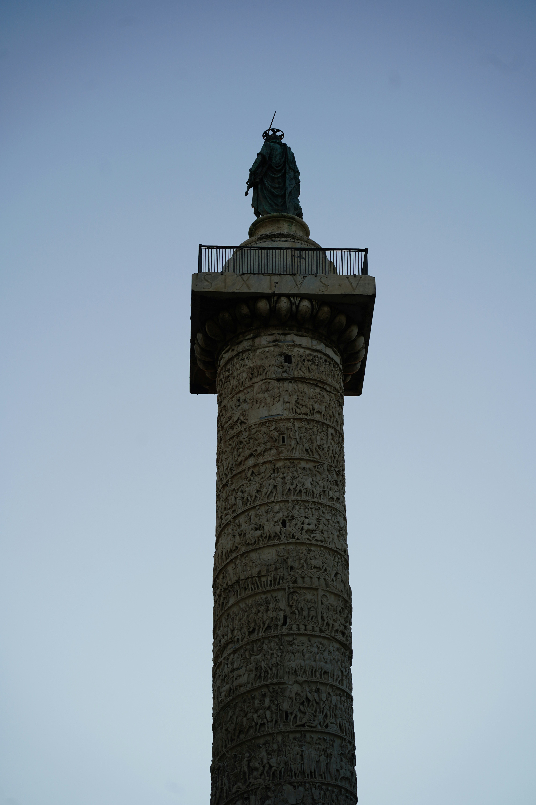

Overview
Trajan’s Column is located in Trajan’s Forum in Rome and was finished in AD 113. It was built to honor Emperor Trajan after he won the Dacian Wars.
The outside of the column is covered in a long spiral of carvings. These carvings show Roman soldiers, battles, and building projects.
The Dacian Wars
The Dacian Wars were fought between Rome and the kingdom of Dacia. Dacia was located in what is now Romania and was rich in resources like gold.

First Dacian War (AD 101–102)
Trajan led Roman soldiers across the Danube River. The Romans defeated King Decebalus, but the war ended with a peace agreement.
Second Dacian War (AD 105–106)
Fighting started again a few years later. This time, Rome completely defeated Dacia and made it part of the Roman Empire.
What the Carvings Show
The carvings show daily life in the Roman army, not just fighting. They help show how organized and powerful Rome was.

- Soldiers marching and setting up camps
- Building roads, forts, and bridges
- Trajan speaking to his army
- Enemies surrendering
- Large battle scenes
The Statue on Top
A statue of Emperor Trajan originally stood on top of the column. Over time, this statue was removed or destroyed.
In 1587, the statue was replaced with a statue of Saint Peter. This change reflected the Christian influence in Rome at that time.
Why Trajan’s Column Matters
- It shows what Roman soldiers’ lives were like
- It was used to show Rome’s power
- It shows strong Roman building skills
- It helps historians learn about ancient Rome